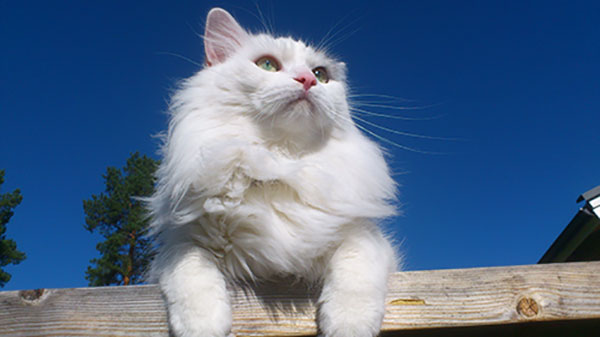

The Sibiran cat is like Maine Coon and Norwegian Forrest cat a "domestic" race in the country, they come from, what people used to call country cats.
They are resistent to infections and has no hereditary defects.
At At first sight these three races look a lot like each other, but how do you really tell the difference between them?
Well, you can look at the shape of the cat's head, Maine Coon gives a square impression, Nowegian Forest cats give a pointed impression and the Siberian a round one.

Head:
Massive and a bit longer than wide. The forehead is broad and just slightly rounded.
Cheekbones are well pronounced and high.
The profile shows a slight indentation with no end.
The head should give a round impression.
Ears:
Medium size and well open at the base. Tips are rounded with well developed hairs on the inside and tufts.
Placement with good width between, tilting slightly forward.
Eyes:
Large and slightly oval shaped. A bit oblique, set widely apart.
All colours are allowed, but green is preferable. Pure colour is desirable.
Body:
The body in proportion creates a rectangular apperance with a well boned an muscled,
wide chest and a powerful neck.
Legs:
Medium high and forms a rectangle with the body.
The paws are large, round and well tufted between toes.
Tail:
Medium long with a rounded tip. Covered on all sides by dense hair with no hairs trailing down.
Fur:
Very dense and an undercoat not lying flat. Over coat water repellant, slightly hard to the touch.
Color:
All colurs are allowed with an unlimited amount of white, except patterns and the vareties chocolate, cinnamon, lilac, fawn.